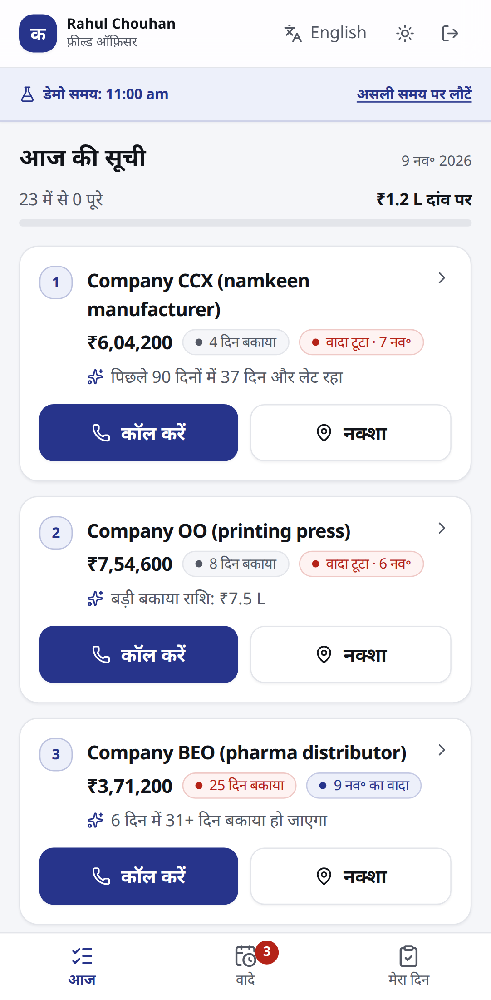
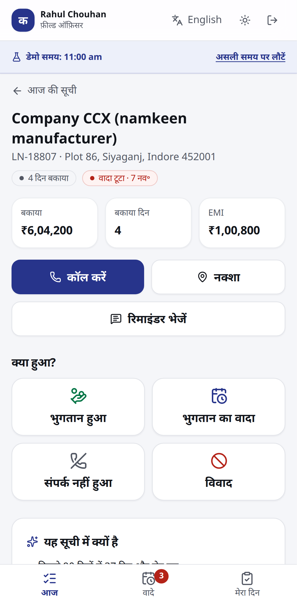
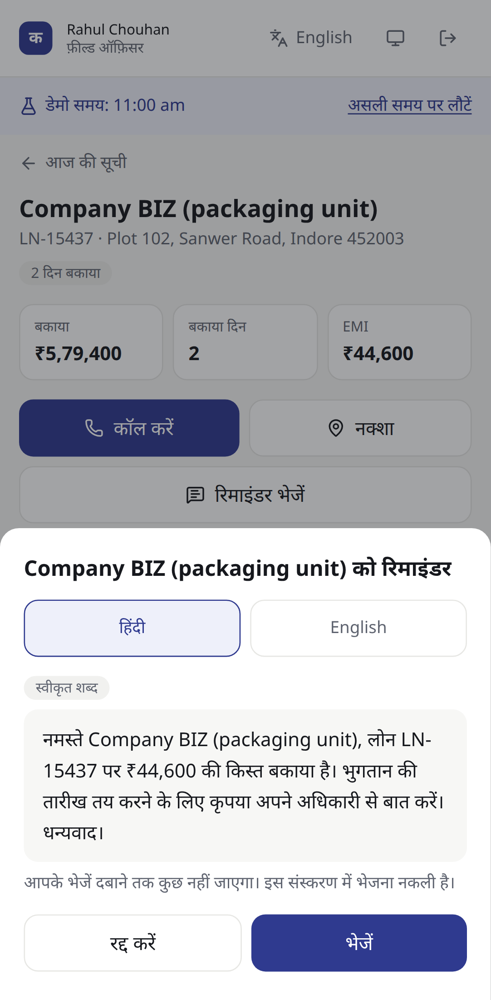
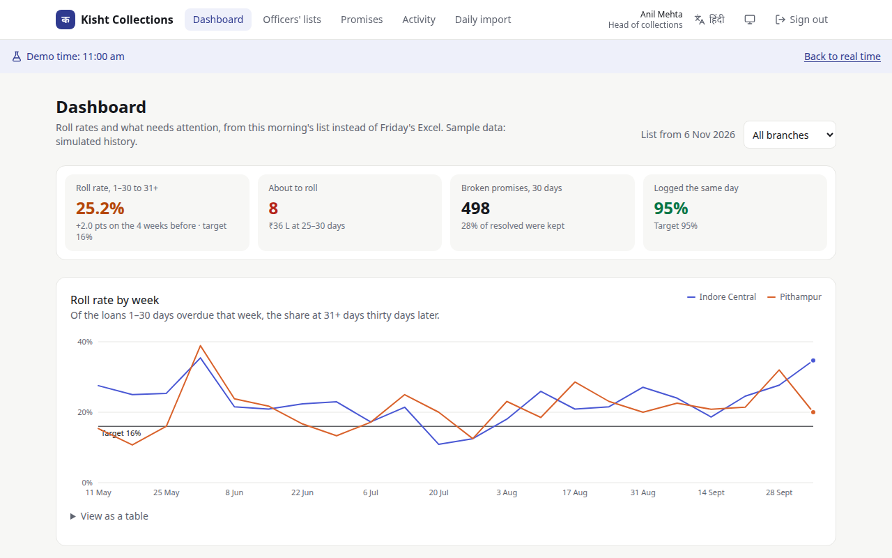

Technical design document. Brief 4: field collections with AI prioritisation for an MSME lender in Indore.
GitHub: https://github.com/palvk4469/Kisht
Live app: https://kist-collection.duckdns.org
Demo logins and run steps:deployment.md
Labels: A# is an assumption (all listed in the appendix). D# is a decision, recorded with its reason in docs/DECISIONS.md.
1. The problem
Company A's officers get names on WhatsApp each morning, and outcomes come back the same way. Promises live in notebooks, and head office rebuilds the picture in Excel every week. The head of collections cannot see what happened in between.
The brief puts the cost at ₹1.63 crore a year: ₹1.134 crore from loans rolling past 30 days overdue, and ₹49.5 lakh of manual reporting. Success means the roll rate falling from 22% to 16% in four months, 95% of visits logged the same day, and the weekly Excel stopped.
So the design rests on three things an officer or auditor would notice at once:
The list must be trusted. Every loan says why it is there, in plain words, and a manager can overrule it.
Logging must never fail in the field. Weak signal is the normal case, so the phone is the first place anything is saved.
The contact rule must be provable. RBI limits contact to 8 am–7 pm, so the app blocks it and keeps a record of every attempt, including blocked ones.
2. What was built
Brief
Built
Daily CSV import, auto-assignment
Preview first, with row-level errors, then commit. Assigned by pincode, then lowest workload, keeping a loan with its officer where possible (A3).
Officer list, call and map, outcomes with GPS
Ranked list with reasons. An outcome takes three taps. GPS is attached if it arrives within 1.5 seconds and never holds up logging.
Promise reminders
To borrower and officer, on approved wording, held outside 8 am–7 pm, stopped once the promise settles or the loan is disputed (A22).
AI priority score, top three reasons
A logistic regression. Reasons are real terms of the model's sum (section 6).
AI-drafted reminders
A model reached through OpenRouter rewords an approved template and never sees borrower details. Sent only on the officer's tap (section 6).
Manager dashboard, activity log
Roll rate by branch and week, broken promises, weekly back-test, and every attempt with its visit location checked against the borrower's address.
Hard parts
Offline logging with sync, and the contact block (section 7).
Hindi, minimal design, one hand
Every screen in Hindi and English, light and dark themes, 48 px targets, WCAG 2.1 AA checked in CI (section 9).
Everything in "Must have" was built, beyond the required core slice. Payments, messages and outside systems are mocked as the brief allows: a "sent" message is written to MessageLog and labelled as simulated on screen (D11).
3. Architecture
A modular monolith: one API, one web app and three small packages with one job each. An eight-week project with one team does not need microservices, and a lender's auditor benefits from having a single place to read each rule.
Solid boxes are ours. The web app may not import the database: Biome fails CI if it tries.
Decision
Why
Rules live in a pure domain package (D1, D9)
The button greyed out on the phone and the rejection on the server run the same code, so they cannot disagree.
One contracts package (D16)
Fastify validates and serialises through the same zod schemas the web parses with. A field not in the contract, such as a phone number, cannot leak. OpenAPI docs are generated from them.
One access-control module (D6, D17)
Every loan, officer and batch query takes its filter from scope.ts. Out of scope returns 404, so IDs cannot be probed.
Next.js proxies /api/* (D3)
The browser only talks to one origin, so cookies stay first-party and the API needs no CORS.
Boundaries enforced in CI (D18)
A dependency rule that is only a convention erodes. Lint fails on a wrong import, and business rules must keep 90% test coverage.
4. Data model
PostgreSQL through Prisma. Three properties do most of the work: facts are appended and never edited, each day's list is a snapshot, and uniqueness is enforced by the database.
Table
Holds
Why it matters
Borrower, Loan
Who owes, in which branch, EMI, contact paused
The borrower's preferred language drives reminders
ImportBatch, LoanSnapshot
Each upload; each loan's outstanding and days overdue per day
Roll rate needs daily history (D10)
Assignment
Which officer, from when to when
A partial unique index allows one current officer per loan
PriorityScore
Probability, rupees at stake, reasons, model version, per day
The back-test judges the scores actually given
ContactAttempt
Channel, device and corrected time, GPS, allowed, block reason; client UUID unique
The RBI record. A retry cannot store twice
Outcome, PromiseToPay
Paid, promise, not reachable, dispute; promise date, amount, status
A partial unique index allows one pending promise per loan
Payment
Detected from each import (A8)
Decides whether a promise was kept (A7)
ListOverride
A manager's move, with its reason
Shown to the officer and audited
Reminder, ReminderDraft, MessageLog
Scheduled reminders, officer drafts, what was "sent"
Each draft records why any AI wording was rejected
BacktestRun, AuditLog
Finished weekly results; sensitive actions
A finished week never changes (D26)
5. Main flows
Morning import
A manager uploads the CSV and sees what it will change, with errors listed by Excel row number. Nothing is written yet.
On commit, a transaction claims the batch, so a double submit does nothing, and plans again from the current database.
Loans, snapshots, payments, assignments and scores are written, and open promises are resolved as kept, partial or broken.
An officer's day
The list opens at once from the phone's copy and refreshes behind it (D27). The whole day is one payload, so every loan opens with no signal (D22).
Tap a loan, tap what happened, confirm: three taps. A promise's date chip is itself the confirmation.
The event is saved on the phone first and sent when it can be.
Promises and reminders
A promise schedules reminders for 10 am the day before and 9 am on the day to the borrower, and 8:30 am to the officer (A22). The next import decides whether it was kept. A dispute stops all contact until a manager clears it (A12).
Managers
Managers open the dashboard rather than waiting for Friday. Roll rate counts loans 1–30 days overdue on day D that are 31+ on day D+30 (A6). This is the brief's 31–60: days overdue rise at most one a day, so a loan at 30 or under can't pass 60 in thirty days. They can reorder a list or reassign a loan, each with a reason the officer sees and an audit entry, and they can inspect any attempt in the activity log.
6. How the AI works
Priority score: a model, on purpose
A lender must be able to explain why one borrower was chased before another, so scoring uses a logistic regression, not an LLM (D8). It is deterministic, its coefficients are versioned in the repo, and it runs in the same TypeScript as everything else.
Inputs: days overdue, outstanding, days since last payment, earlier lateness, broken and kept promises, open promise, days since last contact, times not reachable. All are point-in-time, and tests enforce that nothing after the scored day leaks in.
Ranking (A18): loans at 1–30 days come first, because those can still be stopped from rolling. Within each group, most rupees at stake: probability × outstanding × 0.20 × 0.35, using the brief's NPA and loss rates (A10).
Reasons: each is a real term of the model's sum, measured against a clean loan, so a reason is never shown for a fact that is not there. A loan with little history says so.
The first version mixed all stages and lost to a one-line rule, 59% to 88%. That back-test is why the stage ordering exists (D21). Results on a simulated world the model never saw (share of the rupees that rolled, inside each officer's first loans of the day):
First…
Model
Oldest first, 1–30 only
Oldest first (today's practice)
5 loans
68.3%
59.2%
0%
10 loans
91.8%
88.5%
16.7%
Limits, stated plainly. The data is synthetic (A9), so these figures show the method works on a simulation, not what it will do for this lender. It must be retrained on real history before go-live. Most of the gain comes from the stage rule; the model's own lead over that rule is real but modest. In the weekly back-test, the simple rule narrowly won one of the last eight weeks (84% vs 83%). The back-test shows the model targets the right loans. It does not prove a call would save them, which is why roll rate stays on the dashboard.
When the score is wrong: it is advisory and blocks nothing, the maths is on the loan screen, managers can reorder, and the dashboard's weekly back-test compares scores given with what those loans did thirty days later.
Reminder drafts: an LLM, fenced in
On the officer's tap, the server picks the approved template that fits the loan's latest promise.
The model receives only that template with its placeholders (such as {borrowerName}), the language and the situation. No name, number or note ever leaves, so there is no personal data to leak (DPDP) and no outside text to inject.
The reply must pass every check: word filter in English and Hindi, exactly the same placeholders, no invented numbers or links, length and language. Any failure, outage or missing key gives the officer the approved wording instead, labelled as such.
The officer reads it and taps Send. They cannot edit it, so what passed the checks is what goes out. Sending obeys the contact window and the daily limit, and every try is recorded (A27).
The call goes through OpenRouter, with free models tried in order and set by an environment variable. Testing showed why that order matters: the free router often picked a model that returned nothing in Hindi, so two models that wrote good Hindi come first. Because no personal data is sent, a free model that keeps prompts is acceptable. A successful draft is reused for that loan, language and day. A slow or rate-limited model only means the officer gets the approved wording, labelled as such.
7. The hard parts
Offline logging with sync
Append-only events with client UUIDs (D7). Nothing is edited, so nothing needs merging. A retry stores nothing twice, including retries arriving at the same moment, which the database settles.
The screen tells the truth. The list is the last server copy plus unsent events, so logged work shows at once and survives a reload. Anything the server later refuses stays visible with the reason. One invalid entry cannot jam the rest.
The app itself is cached by a service worker, network-first with a 3-second timeout, because weak signal hangs rather than fails.
Personal data on the phone stays in IndexedDB, scoped to the user, cleared on sign-out and expired after 7 days. Unsent work survives sign-out, because it is the only copy.
The 8 am–7 pm contact block
Judged by when it happened (D9). A call at 18:50 synced at 21:00 is legitimate.
A wrong phone clock can't cheat (D20). Each batch states what the phone's clock reads now, and the server corrects by the gap. Setting a phone back shifts both readings equally, so it changes nothing.
Blocked, explained, recorded. A blocked tap tells the officer why and when contact opens, and is stored with its reason. An outcome can only stand on an allowed attempt.
The server has the final say, along with a limit of 3 contacts per loan per day (A5).
8. Security and compliance
Access: scoped per role in one module and tested per role. Sign-up is closed, and sign-in is rate-limited in Postgres, per address as recorded by the nearest trusted proxy (D29).
DPDP: managers see masked phone numbers, and revealing one is audited. Officers get full numbers only for loans they hold (D19), because calls often work when data does not. The AI sees no personal data.
On the phone: borrower data is cached in IndexedDB per user, cleared on sign-out, and expires after 7 days, which limits what a lost phone exposes. Unsent work stays until it is delivered, because it is the only copy.
Location: GPS is read once, only when an officer logs an attempt or outcome. The app never tracks officers continuously.
Retention: uncommitted import previews are deleted after 24 hours (A24), and sign-in rate-limit records, which hold IP addresses, after a day. Production would add encryption at rest, backups, a retention policy for loan and contact records, and a process for data-subject requests.
What this is not: this is a demo with the controls listed here, not a claim of legal compliance with the DPDP Act. That needs legal review and the lender's own processes.
Demo password: it is public on purpose, in the repository and on the sign-in page, and only opens synthetic demo accounts.
Web: an origin check on every change, every input validated by contract, and a Content-Security-Policy with nothing loading from elsewhere. It allows inline scripts: nonces would mean rendering every page per request, giving up the static shell that offline opening relies on (D30).
Repository: no secrets and no real personal data. Borrowers are placeholders with fake numbers (A14).
9. UI and design decisions

The list: why each loan is there, with Call and Map one tap away.

The loan: contact first, then four large outcome buttons within thumb reach.

The reminder: read it, choose a language, then decide.
One hand. 48 px targets, bottom sheets instead of new pages, and a date chip that doubles as confirmation.
Restraint. One accent colour, with status colours kept for meaning. Each colour also has words, so nothing relies on colour alone.
Low-end phones. System fonts instead of web fonts saved 415 KB, more than all our code (D23). Charts are small hand-written SVGs with a table view (D25).
Hindi first for officers (A16), with English one tap away, using a small typed dictionary that checks every key exists in both languages (D15).
Reviewers open apps at night, when the rules block all contact. A clearly bannered demo clock, present only in demo mode, handles that (D13).

The head's question, answered: roll rate by branch against the 16% target, without waiting for Friday.
10. Testing
Layer
Count
What it proves
Business rules
149
Boundaries such as 18:59:59 vs 19:00:00 and the 90% promise line; threats in two languages. Coverage of at least 90% is enforced.
API integration
127
Access per role, CSRF, contracts, import re-uploads, sync retries at the same moment, an AI that misbehaves.
Database and seed
9
Partial unique indexes; the brief's sample rows exactly; roll rate near 22%.
Web units
9
The offline overlay.
Browser (phone and desktop)
78
Real offline work reaching a manager, three-tap logging, the 7 pm block, and WCAG AA on every screen in both themes.
CI runs lint, strict types, all of the above and a production build on every push. Lighthouse measured accessibility at 100, and performance at 99 on sign-in and 83 on the officer's list on a slow first visit, after which it opens from the phone.
11. What was cut, and what's next
Cut
Why
Sending the outbox while the app is fully closed
It would duplicate the send logic in the service worker, and officers keep the app open. Everything sends the next time it opens (A13).
Drafting a reminder with no signal
The server has to check every draft. Calls, visits and outcomes all work offline.
Cash receipts, legal notices, auto-dialling
Out of scope in the brief.
Known limits
The daily contact limit is per loan (A5). A person with two loans could be contacted six times a day. The export has no borrower ID, so each loan gets its own borrower record, and matching on phone or name could wrongly merge different people. It should move to per-person once the loan system provides an ID.
Not yet tried on a real low-end Android phone, and the Hindi needs a native speaker's read. Server error messages are in English only.
The officer's list loads about 290 KB of JavaScript (gzip) the first time, against a 200 KB target; after that the service worker serves it from the phone. Manager pages are about 255 KB, because they no longer load the offline storage they never use. Replacing the storage library would save about 33 KB at the cost of hand-written code in the riskiest part of the app.
Two moderate advisories in the API docs page's dependencies wait on a patched release clearing our supply-chain age rule.
Next, within the brief's eight weeks
Retrain the model on the lender's real repayment history, and recheck against the back-test.
Pilot with one branch, measuring roll rate and same-day logging against the targets.
Connect a real SMS or WhatsApp gateway, which changes one function (D24), and have compliance approve the templates (A25).
Replace the CSV upload with a direct feed from the loan system once the pilot proves the workflow.